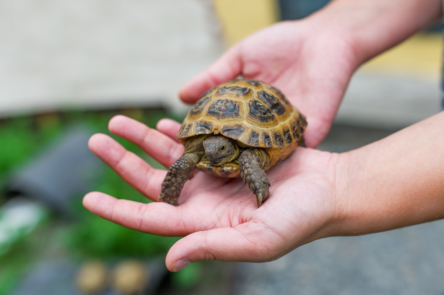
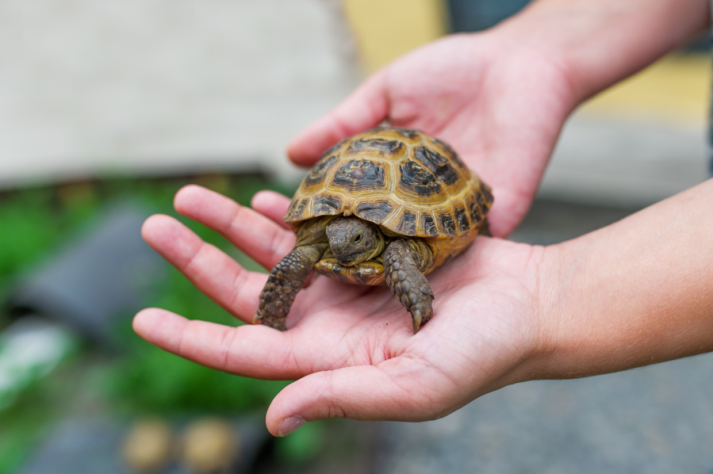
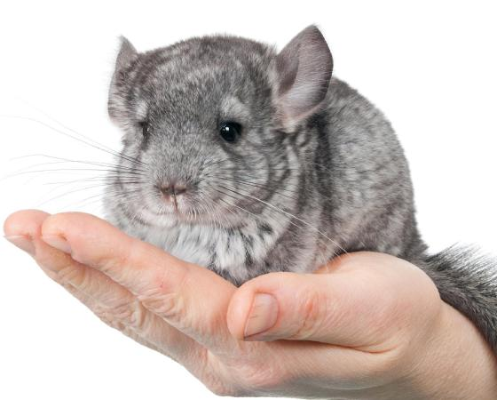
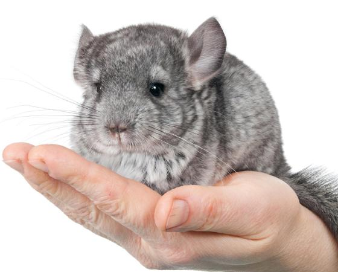

I want to have a cat because they are just like dogs but they don't have to go outside all the time. In fact, we are getting one very soon! Unfortunately my sister is allergic to cats. Fortunately, we are getting a cat that my sister is the least allergic to.

 more about pet cats
more about pet cats
Me and my sister considered on getting a bird because we thought that they were cute and cool. We thought that it would be neat to have a little buddy yell random words while we eat.

 more about pet birds
more about pet birds
I wanted a turtle because I thought they were cool. One time I went to a local petsmart and found a turtle who constantly swam towards the wall of its cage. That was interesting to see
 
more about pet turtles

more about pet turtles
The first time I saw a chinchilla was when I saw it in person. I thought it was a bunny at first but it looked odd. But then I learned that the creature sitting in front of me was called a Chinchilla. A few years later I found some chinchillas at a pet store and I thought that was pretty neat. But then it came to my attention that if they don't like you, they will pee on you. This made me reconsider getting a chinchilla as a pet.
 
more about pet chinchillas

more about pet chinchillas
I was surfing the internet and found a video of a bearded dragon that someone had. I found the video pretty funny. And the good thing is that my sister isn't allergic to bearded dragons.

 more about pet bearded dragons
more about pet bearded dragons